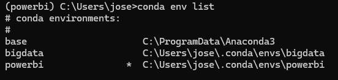
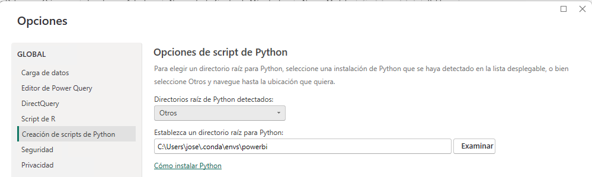

📶 PowerBi e Python

Crear un novo contorno de conda para Microsoft PowerBi
conda create -n powerbi python=3.11
conda activate powerbi
conda install -c conda-forge matplotlib pandas mkl-service
Configurar un contorno conda en Microsoft PowerBI
- Averiguar cal é o directorio do contorno "powerbi", por exemplo con comando:

- Ir a: "Archivo -> Opciones y configuración -> Opciones".
- Imos na parte esquerda, en: "Creación de scripts de Python"
- En "Directorios raíz de Python detectados:" seleccionamos "Otros" e nos aparecerá unha caixa para seleccionar un directorio cunha instalación de Python.
- En "Establezca un directorio raíz para Python" preme en "Examinar" e selecciona o cartafol do contorno de conda que temos averiguado anteriormente.

Empregar código en Python como orixe de datos
- Facer click en "Inicio -> Obtener datos -> Más..."
- Buscar: "Script de Python".
- Podes empregar este código como exemplo:
import pandas as pd
datos_estudantes = ({
'Nomes':["Fulano", "Mengana", "Zutano", "Perengana"],
'Pesos' :[83, 56, 90, 60],
'Notas':[9, 8, 7, 6]
})
df = pd.DataFrame(datos_estudantes)
Se falla con ADO.net: Python Script Error
Por erros de codificación pode dar unha mesaxe tipo: "ADO.NET: ÞУŧћøñ ŝ¢ѓĭρť έřґσŕ.
Non está a detectar o contorno conda, polo que abriremos unha consola de "Anaconda Powershell" e activamos o contorno de PowerBI:
Por último arrancamos PowerBI dende esa consola:
Exemplos para importar
Proba a importar a seguinte táboa con PowerBI. Ten en conta que debes transformar as datas antes de aceptar os datos. Despois trata de xogar cos formatos de números para poñer 2 decimais sempre nas columnas de peso e cuota e indica que a columna cuota está en euros.
Exemplo de táboa de datos para importar
Obxecto visual de Python
Lembra que se queres empregar os sinónimos "cuasi" estándar das librerías, debes importalas. Por exemplo:
Acceso dende PowerBi a Hadoop
Podes acceder aos arquivos que estean no HDFS dende PowerBI
Ver tódolos arquivos:
http://X.Y.Z.T:9870/webhdfs/v1/user?op=LISTSTATUS
Descargar un arquivo concreto:
Cambiar C:\Windows\system32\drivers\etc\hosts e meter a IP do master co nome:
Isto é necesario porque internamente, cando baixamos un arquivo, por defecto temos configurado que vaia ao nome.
Tamén pode resultarche interesante:
- Expresións DAX: https://learn.microsoft.com/es-es/dax/
- WebHDFS: https://hadoop.apache.org/docs/r1.0.4/webhdfs.html